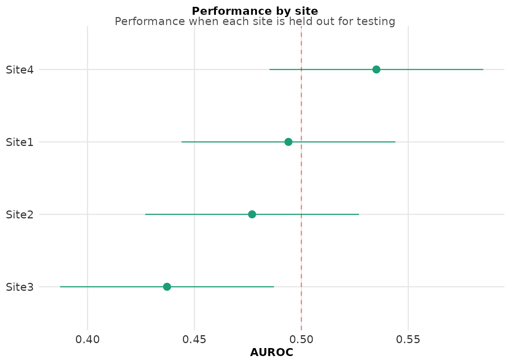
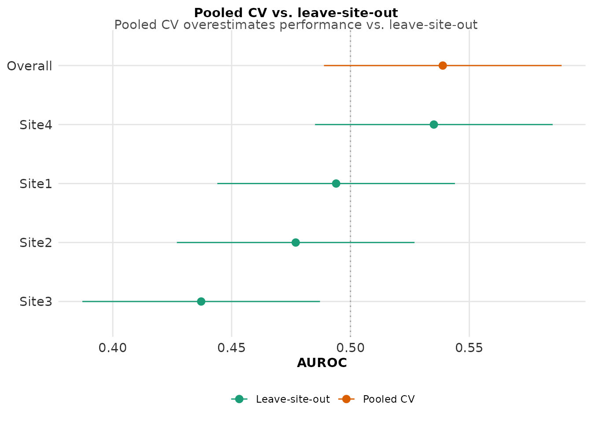

Cross-Context Validation: Testing Generalizability
cross-context-validation.Rmd
library(langAssessR)
library(ggplot2)
library(dplyr)
#>
#> Attaching package: 'dplyr'
#> The following objects are masked from 'package:stats':
#>
#> filter, lag
#> The following objects are masked from 'package:base':
#>
#> intersect, setdiff, setequal, union
set.seed(123)The Challenge of Generalizability
Models trained on one site, population, or context often fail when applied elsewhere. Leave-site-out cross-validation tests whether models generalize across contexts.
Demonstration
- Prepare multi-site data
# Generate data with site effects
sim <- simulate_lang_data(n = 300, n_sites = 4, seed = 42)
# Extract features
features <- la_features(sim$transcripts$narrative)
X <- features[, -1] # Remove ID column
y <- sim$participants$y_bin
sites <- sim$participants$site
# Show site distribution
table(sites)
#> sites
#> Site1 Site2 Site3 Site4
#> 85 83 59 73- Run leave-site-out cross-validation
# Compare leave-site-out vs pooled k-fold CV
cv_results <- cross_context_cv(
x = X,
y = y,
site = sites,
leave_site_out = TRUE,
k = 5,
seed = 123
)
# Site-specific performance
print(cv_results$site_estimates)
#> site estimate lcl ucl
#> 1 Site1 0.4939638 0.4439638 0.5439638
#> 2 Site2 0.4769585 0.4269585 0.5269585
#> 3 Site4 0.5350877 0.4850877 0.5850877
#> 4 Site3 0.4371795 0.3871795 0.4871795
# Overall comparison
print(cv_results$compare)
#> site estimate lcl ucl model
#> 1 Site1 0.4939638 0.4439638 0.5439638 Leave-site-out
#> 2 Site2 0.4769585 0.4269585 0.5269585 Leave-site-out
#> 3 Site4 0.5350877 0.4850877 0.5850877 Leave-site-out
#> 4 Site3 0.4371795 0.3871795 0.4871795 Leave-site-out
#> 5 Overall 0.5388396 0.4888396 0.5888396 Pooled CV- Visualize generalization gap
# Plot site-wise performance
plot_site_performance(cv_results$site_estimates, metric_label = "AUROC") +
geom_hline(yintercept = 0.5, linetype = "dashed", color = "red", alpha = 0.5) +
labs(subtitle = "Performance when each site is held out for testing")
# Forest plot comparing approaches
if (!is.null(cv_results$compare)) {
plot_forest_compare(cv_results$compare) +
labs(subtitle = "Pooled CV overestimates performance vs. leave-site-out")
}
- Quantify the generalization gap
# Calculate the gap
pooled_perf <- cv_results$compare %>%
filter(site == "Overall", model == "Pooled CV") %>%
pull(estimate)
lso_mean <- cv_results$site_estimates %>%
summarise(mean_auc = mean(estimate, na.rm = TRUE)) %>%
pull(mean_auc)
gap <- pooled_perf - lso_mean
cat("Pooled CV AUROC:", round(pooled_perf, 3), "\n")
#> Pooled CV AUROC: 0.539
cat("Mean LSO AUROC:", round(lso_mean, 3), "\n")
#> Mean LSO AUROC: 0.486
cat("Generalization gap:", round(gap, 3), "\n")
#> Generalization gap: 0.053Interpretation
The generalization gap reveals how much performance drops when models face truly new contexts. This is critical for:
Realistic performance expectations
Identifying models that won’t transfer
Highlighting the need for diverse training data
Recommendations
Always test on held-out sites/contexts
Report both pooled and leave-site-out metrics
Consider the gap when planning deployments
Collect diverse, multi-site training data when possible